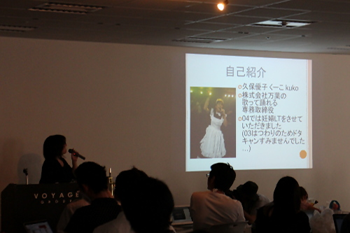
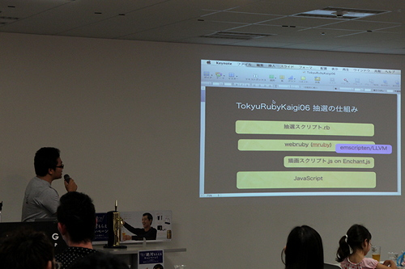
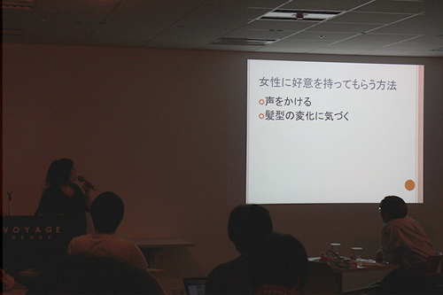
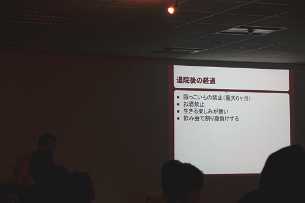

RegionalRubyKaigi レポート (39) Tokyu Ruby 会議 06
はじめに
TokyuRuby会議06 は、東京での12回目の RegionalRuby会議として、2013年6月29日に開催されました。本記事はその様子をレポートしたものです。
TokyuRuby会議06について
TokyuRuby会議は、Rubyに興味のあるエンジニアが集うTokyu.rbが主催するLT大会です。
第一回からの特徴として、「お酒・食べ物持ち込みあり」「その場で参加者から抽選でLT発表者を選出する」「基調講演は当日の投票で選ぶ」などがあります。
会場について
会場もこれまで同様、VOYAGE GROUP様が快く提供してくださいました。
プロジェクターやスクリーンからドラ、ソフトドリンク、休憩場所など、必要なものが全て揃う、至れり尽くせりの会場でした。
開催概要
- 開催日
- 2013-06-29 (土) 13:30 - 19:30
- 開催場所
- 株式会社 VOYAGE GROUP 様 会議室
- 主催
- Tokyu.rb
- 参加者
- 約70名
- 公式ページ
- http://regional.rubykaigi.org/tokyu06
- 公式ハッシュタグ
- #tqrk06
LT 大会の様子
受付の様子
参加者の皆さんが開場に到着すると、受付で出席確認とタイムスケジュールをお渡ししています。
受付を済まされた後は、ウェルカムドリンクとして、ザ・プレミアムモルツが振る舞われました。
開会の挨拶
 まずは実行委員長の河野誠(@ginkouno)さんによる開会の挨拶(LT)から始まります。
まずは実行委員長の河野誠(@ginkouno)さんによる開会の挨拶(LT)から始まります。
ここで乾杯もするのですが、既に酔っぱらっている方も多数いらっしゃいましたが・・・。
前半LT
13名の方が発表されました。
そして、ビールスポンサーであるサントリーさん、
会場スポンサーであるVOYAGE GROUPさんをはじめとする、酔いには負けないくらい聞きがいのあるLTが続きました。
ザ・プレミアムモルツの美味しさの秘密 (ビールスポンサー サントリー 様)
: 
サントリーのビールは地下深くから汲み上げた良質の「天然水」で仕込まれているそうで、
今回は、その天然水の効き水に、会場から4名挑戦！全員正解！
キャンペーンのご案内 (ビールスポンサー サントリー 様)
 引き続き、「ザ・プレミアムモルツセミナー参加者へキャンペーンのご案内」
引き続き、「ザ・プレミアムモルツセミナー参加者へキャンペーンのご案内」
おすすめは、6缶応募コースのオリジナルペアグラス
参加者へのお土産に応募シートがついてました。
これシリアルナンバーついてるので、回収10%以上で次のTokyuRuby会議でも会えるよ！
(2013.12.31応募締め切りなので、まだの人は、ぜひ応募してくださいね！)
会場説明 (会場スポンサーVOYAGE GROUP 様)
: 
ふるきよき時代からのエンジニア、小芝さんから会場のご案内
(ほんとうに、いつもありがとうございます！)
Login Form from Scratch (takaiさん)
: 
安全なログインフォームの作り方についてのお話。
どれくらいの人がログインフォームを作っているのでしょうか？
一般的なフォーム、間違いがいっぱいあるそうで・・・
require ‘ginza’ Rails::VERSION::STRING #=> “4.0.0” (工藤研一さん)
: 
6/18日に行われた、ginza.rb 第0回のお話。
懇親会の方は、銀座という場所柄高そうなイメージですが、実際は2000円くらいとのこと。
それにしても、ドラ娘から残り時間のお知らせが
「後、4秒」
というが気の毒でした・・・
サクラ大戦に学ぶプロジェクトマネジメント (久保優子(@kuko)さん)
: 
某社の歌って踊れる専務から、まじめなお話。
PMやるならサクラ大戦をやっておけ！
そして、「女性に好意を持ってもらう方法」のスライドに会場の期待が頂点に達したところで、まさかのドラ！！！
続きを聞きたくば、LT王へ投票すれば良いよと司会からの一言もあり、
やばい、LT王候補きたぁ〜と感じたLTでした。
english.rb (willnetさん)
: 
ドヤリングが印象的な、英語でのLTでした。
「明日から本気出す。」ではなく、「今日から本気出せ！」
(「今日から本気出せ！」って言ってたのは司会か？)
KeyRemap4MacBook.rb (@kei_qさん)
: 
keyremap4macbookの設定項目を自動生成してくれるKeyremacというgemを公開されたそうです。
しかし、白魔術版のHaskell版のKeyremacを作成中とのこと。
Github APIを叩いてわかったこと (いろさん)
: 
Ruby会議で登壇された際に発表された内容について、資料集めについての裏事情でした。
スクリプトで「ちゃっちゃっちゃターン！」でいけるはずだったのに・・・・現実は厳しいんですよね・・・。
Elixirの話 (tsukaさん)
: 
日本で初めての地域Elixirコミュニティー「shinjuku.ex」の紹介
Rubyっぽい書き方の出来る、関数型言語
Yokohama.rbでも、みんなでElixirをやったことがありました！
真のWebプログラマー向けのRubyMotion利用術 (Yuumi3さん)
: 
iPhone/iPadアプリ開発の書籍を執筆されたそうです。
WebプログラマーもRubyを使えば、Objective-Cを知らなくても
iPhoneアプリの開発ができるフレームワークを作られたとのこと！
“uwaaaa”から英文に変わったコミットログを見て自分の書き方をまとめてみた (よしはらさん)
: 
ドラ娘:「いらっしゃいませ」
よしはらさん:「いらっしゃいます〜」
の掛け合いから始まったLTでした。
今昔のコミットログを見比べて、どのようにコミットログを書くようになっていったのか、
コミットログだけで内容の伝わる書き方「コミットメッセージ重要」というお話でした。
抽選 LT
TokyuRuby会議では、前半戦と後半戦との合間の休憩中に、 参加者の中から抽選を行い、選ばれた数名の方に、 LTをしてもらうということをしています。
抽選の様子
: 
抽選は、スタッフのkishimaさん作成の
webrubyで作られた、新システムによる厳正に行われました。
参加登録時のアンケートで「俺にもしゃべらせろ」のバイアスがあったものの、
「選出されても大丈夫！」を選択した人からの選出もありました。
01から続いていた恒例の抽選LTは、3〜5名程度でしたが、前半LTが順調に前倒しで行われていることもあり、
今回は10名の方に発表していただきました。
Rubyistimer (kwappaさん)
自己紹介と会社紹介だけで終わりそうな勢いではありましたが、 meguro.rbと、Rubyistokeiの紹介。
Rubyと太陽光発電 (Irinoさん)
設立2年で年商40億円？というのが衝撃！
勉強会を開催する大まかな流れ (Paulさん)
Doorkeeperお世話になっています！
Tokyo Rubyis meetupのお話もありました。
本業と副業のご紹介(居酒屋ひろしさん)
年間3.8バレルものビールを飲んでいるそうで。
愛する某弊社を紹介したい (publichtmlさん)
零細企業です！ベンチャーじゃない！ですという某社のピラミッド構造
自己研鑽って面倒だね (須賀俊介さん)
社内で講師をされているそうで、ちらっと「Python・・・」って聴こえたような
2分でわかるOpenFlowのアーキテクチャ (mer_wancoさん)
「某歌って踊れる専務の旦那、嫁より酒が強いという理由で結婚」
このときのドラ娘は、歌って踊れる専務さんでした。
クラウドサーヴィスAPI使おう (まつざきさん)
円安事案のため、AWSを扱うUserは相場師になってるとのこと。
どういったわけかRubyをやることになってしまった。 (関口さん)
独身のサラリーマン、電気ポットが電気代の割合として多い？
LED on Mac Class for mruby (高橋会長)
トラブル発生「え、キーノートじゃない！」からの無事LT開始
Lチカのデモ成功！
後半LT
前半から続くサントリーさんのザ・プレミアムモルツは休憩時間中にひきあげてしまわれましたが、最後の追い込みをかけてしまった皆さんの酔いは深まるばかり。
おかげで、酔っぱらった司会からの依頼でレポート兼受付担当の私めは、後半戦開始早々は酒屋を探しにいっていて、少し聞きそびれてしまいました・・・orz
たんじょう日を祝ってくれると聞いて来ました (やまねゆりえさん)
: 
お誕生日ということで、お祝いには達人出版会で書籍を購入してくださいね！とのこと。
お誕生日おめでとうございます！
ルビーとビール (tagomorisさん)
: 
「プレモルうまぁ〜」を用意していたそうなのですが、サントリーさんは去った後・・・
今秋予定されているISUCONをいい感じにご紹介。
しかし、いい感じチューニングされたドラがなってしまいました。
(そうそう、サントリーさんが去った後に、ザ・プレミアムモルツを差し入れてくださいましたよね！
ありがとうございました！)
しあわせって、動かすこと (ゆかお（加藤由佳）さん)
- 自作OSを作成中で、デモも披露されました。
- 今後の予定では、mrubyの実装にも挑戦されるそうです！

そうそう、TokyuRuby会議06のスタッフTシャツのデザインをしていただきました！
すごくお気に入りなのです！感謝！感謝です！

TokyuRubyKaigi にエンパワーされた私 (hayabusa333さん)
: 
LTデビューはTokyuRubyKaigi05とのこと！
Ruby On Railsのお仕事の話があったそうですが、訳あって見なかったことしたとか・・・
Rubyで作った自社サービスだけで生活してるけど何か質問ある？ (新井俊一 (恐怖のひよこ大王)さん)
: 
九州からの参加！(ありがとうございます！)
自社サービスについて簡潔にご紹介していただいた後は、ほんとにたっぷり時間を残して、
いくつも質問への回答をしていただきました！
会場からは、トラフィックは？回線は？社員へのお給料は？インフラは？九州での生活の質は？などの質問がありました。
RUMBIE LAND (nariさん)
: 
島根からの参加！(ありがとうございます！)
「ゾンビに気をつけろ！」ということで、「ZOMBIE LAND」の話。
「typoには気をつけろ」という自らの経験談を例にしてお話していただきました。
(_https://twitter.com/home_をうっかり使ってしまわないよう気をつけたいですね！ )
Ride on Rails4 (さねまつさん)
: 
Rails4.1のお話と、「tachikoma」というgemのお話。
(tachikomaって、名前だけで気になりますね。)
SiriとRuby (katsumaさん)
: 
TokyuRuby初参加！
Siriを使ったプログラムの話でしたが、iリモコン？・・・Siriというかリモコンがすげぇ〜という印象のLTでした。
俺の膵臓と入院生活が修羅場すぎる (2celeb (makoto takagi)さん)
: 
スクリーンに表示しようとしたところでシステムエラー発生で再起動してしまうトラブルがありましたが、
エンジニアが入院するとこうなるというお話。
それにしても、たいへんな重傷だったそうで、無事に退院出来てなによりです。
Accept LT
1時間以上前倒しで全LTが終わり、こちらもTokyuRuby会議では恒例化しているAccept LT。
この頃になると、司会、会場、どこもかしこも酔っぱらいばかりで、舌がまわっていない気がしました。
Accept LTには、12名もの方が立候補！
（敬称略）
匿、@joker1007、@bash0c7、@Sugamasao、@niccolli、@tsuka、@iR3、@kenlflan、@tarui、@okitan、@koichiroo、@sue455
皆様ありがとうございました！
LT王・飯王の投票 ＆ 結果発表
基調講演はこれまでと同じく投票で選ぶ形式になっています。
- 全LTの中から「続きを聞きたいLT」へ。
- 持ち込んでいただいた食べ物の中から、「美味しかった食べ物」へ。
飯王
1位 @2celebさん
- 2位 @kwappaさん

安定の4連覇となった@2celebさん、2位も常連の@kwappaさん、
他にも持ち込んでくださった皆様、いつも美味しい食べ物ありがとうございます。
LT王
全LTの中から「続きを聞きたいLT」は、やはりダントツでした。
- 1位 サクラ大戦に学ぶプロジェクトマネジメント
- 「歌って踊れる専務」久保優子(@kuko)さん。
- 2位 ザ・プレミアムモルツの美味しさの秘密
- ビールスポンサーのサントリーさん
- 3位 RUMBIE LAND
- 島根から参加のnariさん
基調講演
LT王
- 久保優子(@kuko)さん。
- 「女性に好意を持ってもらう方法」で、ドラがなるという衝撃的な幕切れから、待望の続きとなる基調講演。

飯王
@2celebさん。

Amazonのお届け先を病室にしておくと便利！とのこと。
お酒は飲み過ぎないように、楽しいときに飲むのが一番良い！
というまとめでした。
まとめ
TokyuRuby会議は酔っぱらいが集まっているようなイメージかもしれませんが、
Rubyistが、お酒を飲みながら、見て、聞いて、しゃべって、
気分良く酔っぱらいへと変貌していくお花見のようです。
応募、抽選、アクセプト、いずれのLTも、発表中にもかかわらず、
質問やツッコミがあったり、笑いがあったり、なにかしら共感のえられるものばかりです。
ビールスポンサーのサントリーの皆様、会場スポンサーのVOYAGE GROUPの皆様、
登壇してくださった皆様、参加者の皆様、
TokyuRuby会議06をこれまで以上に楽しい場へと盛り上げていただき、本当にありがとうございました。
そして、まだTokyuRuby会議に参加されたことのない皆様、この独特なアルコールのパワーによる会場の雰囲気は文章だけではうまく伝えることが出来きないくらい楽しく、本当にRubyistで良かったと思えること間違いありません。
ご興味がありましたら、ぜひぜひ次回ご参加下さい！
（もちろん、アルコールが飲めない方も歓迎です！）
TokyuRuby会議07の予定
次回は__2014.03.29(土)
__櫻井目覚めるミートの日！

というわけではなく・・・
実行委員長に__櫻井達生__さんを据えて、
__桜咲くニクの日(2014.03.29)__になりそうです。
Tokyu.rb のご紹介
Tokyu.rb とは
2ヶ月に1度くらい、目黒でしゃぶしゃぶ、すきやきを食べるRubyistの集団。
東急沿線でなくとも乗り入れ線沿線や、職場が沿線だったりする方も、全く関係が無い方も誰でも参加可能です。
お気軽にお越しください。
http://qwik.jp/tokyurb/
—-
当レポートは、@koichirooさん撮影の写真を使ってます。
http://www.flickr.com/photos/koichiroo/sets/72157634646305233/
他にもたくさんのTokyuRuby会議06の写真が掲載されています。よろしかったらご覧下さい。
※公開に問題があるようでしたらご連絡下さい。
著者について
三浦 美咲樹(@yukaina)
 TokyuRuby会議01から、受付担当。
TokyuRuby会議01から、受付担当。
普段はRuby on Railsでストックフォトサイトの開発しています。